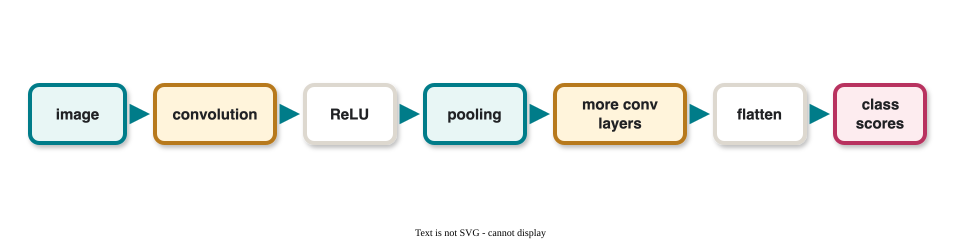
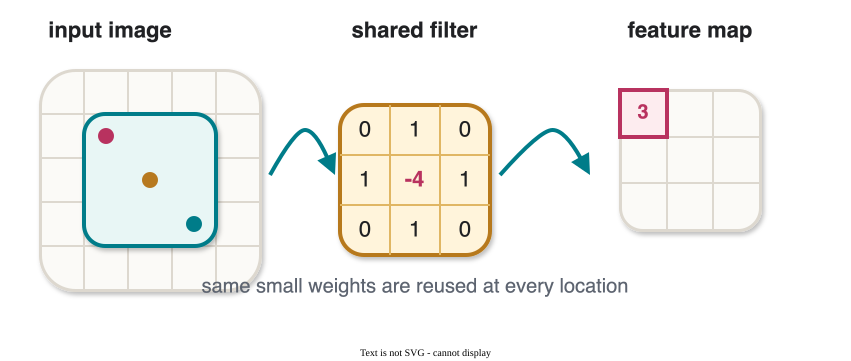
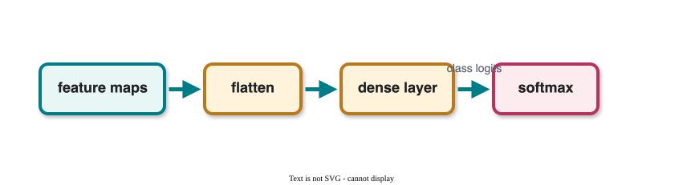

CS 463G & CS 663
(Intro to) AI
Lecture 27: Convolutional Neural Networks
Fall 2026
CNNs are neural networks designed for grid-like data such as images.
Fully connected networks flatten images.
| Problem | Consequence |
|---|---|
| Spatial structure is lost | Nearby pixels are no longer treated as nearby |
| Too many parameters | Large images become expensive |
| No locality bias | The model must relearn local patterns everywhere |
CNNs keep the spatial structure and reuse small filters across the image.

A convolution slides a small filter across an image.

At each position, it computes a dot product:
(I*K)(i,j)=\sum_m\sum_n I(i+m,j+n)K(m,n)
Example edge detector:
K= \begin{bmatrix} -1 & -1 & -1\\ 0 & 0 & 0\\ 1 & 1 & 1 \end{bmatrix}
\begin{bmatrix} 1&2&0&2&1\\ 0&1&3&1&2\\ 1&2&1&0&0\\ 2&1&2&1&3\\ 0&1&2&2&1 \end{bmatrix}
\begin{bmatrix} 0&1&0\\ 1&-4&1\\ 0&1&0 \end{bmatrix}
Top-left patch:
\begin{bmatrix} 1&2&0\\ 0&1&3\\ 1&2&1 \end{bmatrix}
O(1,1)= 1(0)+2(1)+0(0)+0(1)+1(-4)+3(1)+1(0)+2(1)+1(0)
O(1,1)=3
How many pixels the filter moves at each step.
Larger stride means smaller output.
Extra pixels, often zeros, around the image boundary.
Padding controls edge behavior and output size.
For input size n \times n, filter size f \times f, stride s, padding p:
\left\lfloor \frac{n-f+2p}{s}\right\rfloor + 1
Example:
n=5,\quad f=3,\quad p=0,\quad s=1
\left\lfloor \frac{5-3+0}{1}\right\rfloor + 1=3
So the output is 3 \times 3.
Pooling downsamples feature maps.
| Pooling type | Operation |
|---|---|
| Max pooling | Keep the maximum value in each window |
| Average pooling | Keep the average value in each window |
Why pool?
Input:
\begin{bmatrix} 1&3&2&4\\ 6&2&9&5\\ 7&4&8&3\\ 2&6&1&5 \end{bmatrix}
2 by 2 max pooling with stride 2:
\begin{bmatrix} \max(1,3,6,2)&\max(2,4,9,5)\\ \max(7,4,2,6)&\max(8,3,1,5) \end{bmatrix} = \begin{bmatrix} 6&9\\ 7&8 \end{bmatrix}
After convolution and pooling, CNNs often flatten feature maps and use dense layers.

Convolution extracts local features; fully connected layers combine them for the final decision.